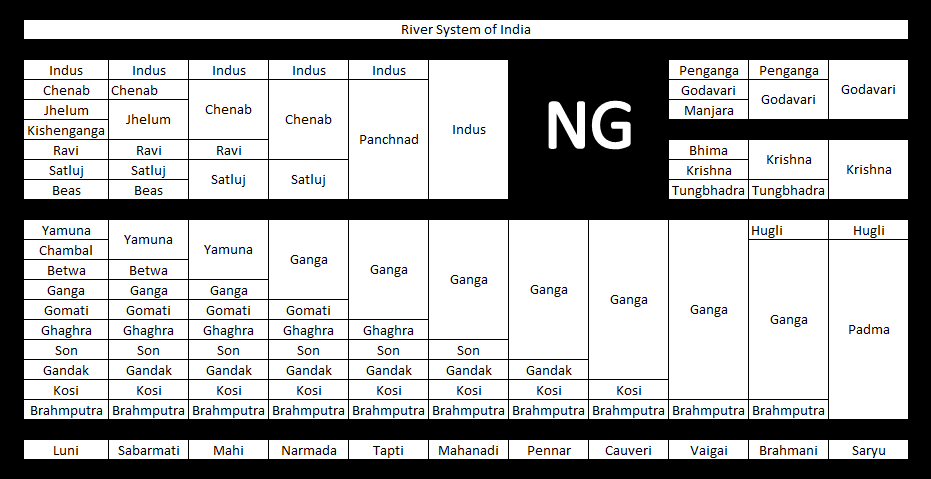

List of major rivers of India
From Wikipedia, the free encyclopedia Jump to navigation Jump to search Map of the Major rivers, lakes, and reservoirs in India Map showing rivers and flood prone areas in India Map of India based on survey of rivers of India The rivers of India play an important role in the lives of the people. They provide potable water, cheap transportation, electricity, and the livelihood for many people nationwide. This easily explains why nearly all the major cities of India are located by the banks of rivers. The rivers also have an important role in Hindu Religion and are considered holy by all Hindus in the country.[1] Seven major rivers along with their numerous tributaries make up the river system of India. The largest basin system of the rivers pour their waters into the Bay of Bengal; however, some of the rivers whose courses take them through the western part of the country and towards the east of the state of Himachal Pradesh empty into the Arabian Sea. Parts of Ladakh, northern parts of the Aravalli range and the arid parts of the Thar Desert have inland drainage. All major rivers of India originate from one of the following main watersheds.
All major rivers of India originate from one of the following main watersheds:
- Aravalli range.
- Himalaya and Karakoram range.
- Western Ghats in western India.
- Vindhya and Satpura ranges and Chotanagpur plateau in central India.
The peninsular river system
Brahmaputra River System
- Yarlung Tsangpo River 2,809 kilometres (1,745 mi) originates and forms the upper stream of Brahmaputra in Tibet
- Dibang - major tributary flowing through Arunachal Pradesh before merging into the Brahmaputra River in Assam